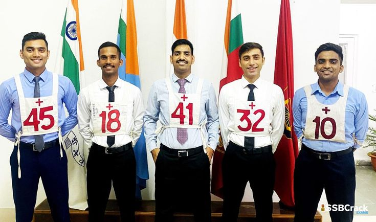

Written exam ke baad ka sabse important step - 5 din ka selection process.
5 Din ka Schedule Tests TipsSSB (Services Selection Board) is an interview and assessment process conducted to select candidates for becoming officers in the Indian Armed Forces.
It evaluates personality, leadership qualities, confidence, communication skills and decision-making ability.
Duration: Usually 5 days.
Purpose: To assess whether a candidate has the qualities required to become an officer in the Indian Armed Forces.
| Din | Kya hota hai |
|---|---|
| Day 1 | Screening: OIR test aur PPDT. Isme pass hone wale hi aage jate hain. |
| Day 2 | Psychology tests: TAT, WAT, SRT aur Self Description. |
| Day 3 aur 4 | GTO tasks: group discussion aur ground par group activities. |
| Interview | Personal interview, jo pehle 4 dino ke beech kisi din hota hai. |
| Day 5 | Conference: sab assessors milkar result batate hain. |
Medical test alag se hota hai. Din ka order board ke hisaab se thoda badal sakta hai.
OIR mein reasoning ke sawal hote hain. PPDT mein ek picture dekhkar kahani likhni aur group mein discuss karni hoti hai.
TAT mein picture dekhkar kahani, WAT mein word dekhkar sentence, SRT mein situation ka jawab, aur SD mein apne bare mein likhna hota hai.
Group discussion aur outdoor tasks, jisme team ke saath kaam karte hue aapki leadership aur cooperation dekhi jati hai.
Ek officer aapse aapke bare mein, family, studies, hobbies aur current affairs ke sawal poochta hai.
SSB mein 15 qualities dekhi jati hain. Kuch main qualities ye hain: